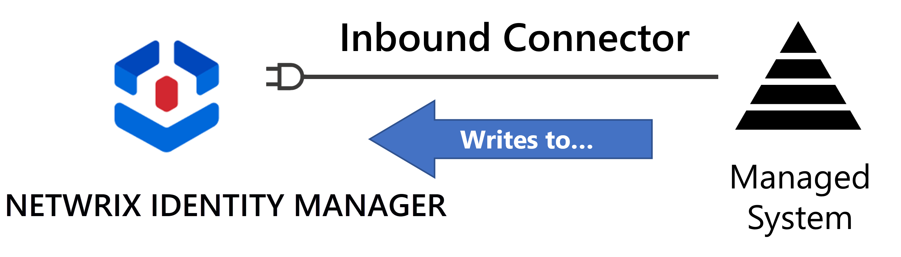
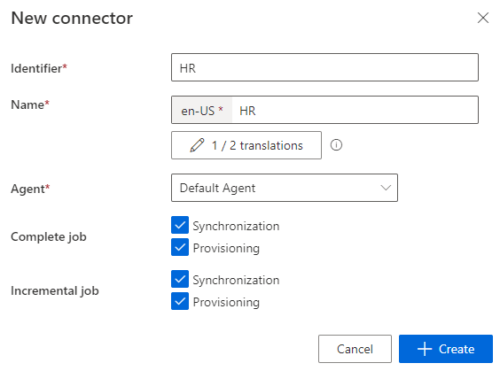
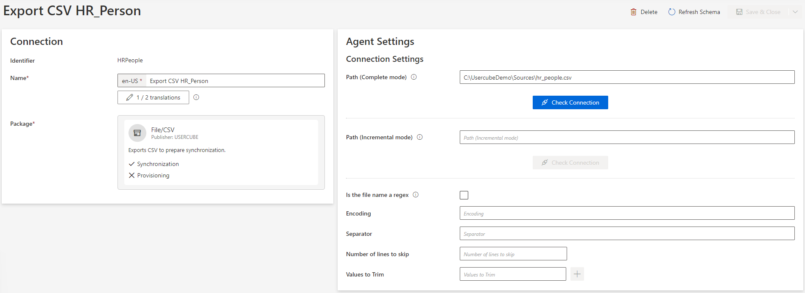
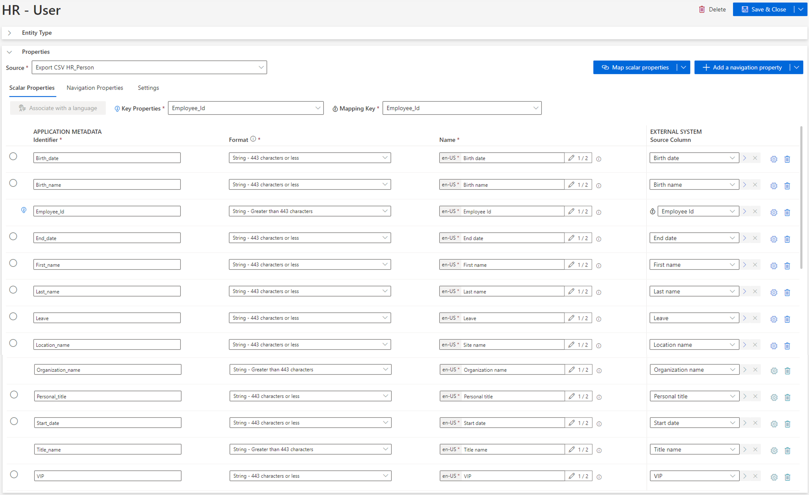
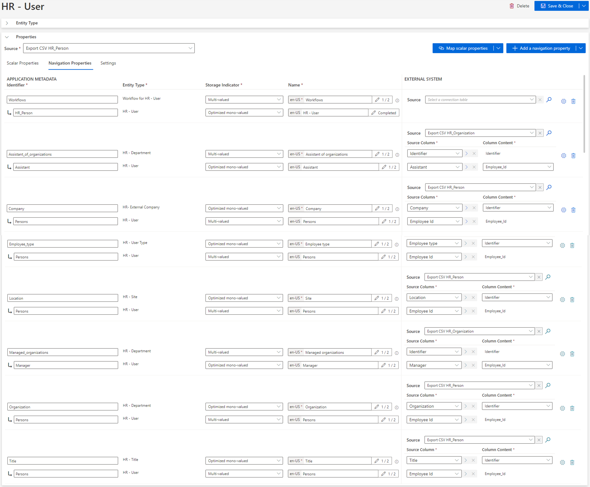

Create an HR Connector
How to create a connector dedicated to the automation of identity management (creation, update, deletion), via the synchronization of HR data into Identity Manager and internal provisioning. See the Connect to a Managed System provisioning.
Overview
HR connector in the global process
The HR connector is no priority but rather an optimization, handled at the end of the configuration cycle.
The HR connector is sometimes the first created connector, used to develop the identity repository.
However, the HR connector requires a specific IT infrastructure (agent, proxy, Virtual Machine, etc.) which can take time to implement, and delay the project's progress.
Moreover, in the long run it poses a few problems as HR data usually misses crucial information such as contractor data, or the projects employees are working on. This can mean that:
- the identity repository is filled using several sources. And when creating identities automatically from HR data and other sources, you need to specify which properties of each identity can be overwritten by a change in HR and which cannot. This is to avoid manually changed attributes being overwritten by the HR data by mistake. This is very tedious.
- the HR data is rarely up to date early enough to be really useful as a trigger for identity creation and deletion. As a result, identities end up being created manually through workflows most of the time.
Hence we choose to build the first iteration of the project upon a manual data upload to Create the Workforce Repository .
This way, we do not have to wait for the agent's implementation to create the first profiles and start connecting systems (AD, SAB, SAP, etc.). Thus value is created faster and we can focus on IGA activities such as the review of orphaned and unused accounts, eliminating risk earlier in the process.
We can still connect HR data, later on, to check consistency between our identity repository and HR data, through a certification-like process.
Technical details
An HR connector is considered an inbound connector, as it writes to the central identity repository inside Identity Manager.

As Identity Manager is able to feed all managed systems, it can also feed itself thanks to specific connections such as the InternalWorkflow connection. It means that the corresponding connector is able to launch workflows within Identity Manager and keep track.
Typically, an HR connector with such a connection would be able to launch workflows inside Identity Manager for identity creation, update and deletion, based on HR files.
Participants and Artifacts
This operation should be performed in cooperation with HR staff who can access HR data.
| Input | Output |
|---|---|
|
Identity Repository. (required) |
HR connector |
See the Create the Workforce Repository topic for additional information.
Create an HR Connector
Create an HR connector by proceeding as follows:
-
Outside Identity Manager, Model the Data of your connector.
-
Declare an HR connector using your local agent. See the Create the Connector topic for additional information.

-
Create an Export CSV connection for each HR file to connect. See the Create a Connection topic for additional information.

-
Create an Entity Type corresponding to your model. For example:


-
Don't forget to reload and Synchronize Data to access HR data within Identity Manager.

Verify HR Connector Creation
In order to verify the process:
-
Launch synchronization.
-
Access the connector's logs (from Job Results on the connector's dashboard) to ensure that synchronization completed successfully.

-
Check that the entity types have been added to the left menu of the home page.
-
Access the relevant entity types (from the menu items on the left of the home page) to check synchronized resources, by navigating in the UI from the accounts through a sample of associations, via the Eye icon:

You should seek configuration validation, not validation of the actual data being synchronized.